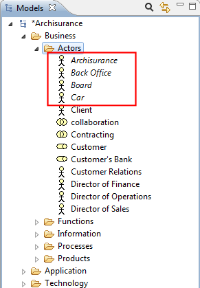
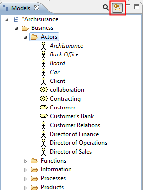
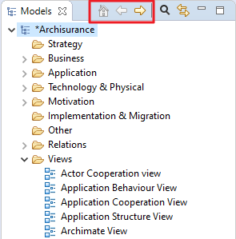

Generally, you can add, delete, duplicate, move, and rename concepts and Views in the Model Tree. You can also create folders under the main folder groupings in order to group concepts together.
Objects are managed with drag and drop in folders. Note that you cannot move concepts from one main folder type to another. For example, Business concepts can only be in the "Business" folder or one of its sub-folders, and relationships can only be in the "Relations" folder or one of its sub-folders.
In addition to drag and drop you can cut and paste objects between folders. After selecting objects in the tree select "Cut" and, after selecting the target folder, select "Paste" to move the objects.
To delete one or more objects in the Model Tree select them and choose "Delete" from the main "Edit" menu or from the main toolbar.
Note that if a concept that you wish to delete appears in one or more Views you will be warned that it is referenced in those Views. If you then delete the concept from the tree you will also delete it from any Views where it is referenced.

Warning about deleting a concept
To rename an object in the Model Tree choose "Rename" from the main Edit menu or from the right-click context menu. You can also rename it in the Properties Window.
To duplicate Elements or Views in the Model Tree select "Duplicate" from the main "Edit" menu or from the right-click context menu. Note that Duplicate Views contain references to the original concepts copied.
To edit the Properties for a selected object in the Model Tree, select the object in the tree and open the Properties Window either by double-clicking the object or from the main "Window" menu or main toolbar.
Each object in the Model Tree has different properties that can be set or viewed in the Properties Window. For more information see the section, The Properties Window.
Note - some properties can only be edited when the object is selected in a View (for example, the fill colour, font or line width).
Concepts in the Model Tree can be added to any number of diagram Views in the model by dragging them onto the View's canvas (see the section, "Views"). When a concept has been added or used in a View the font used in the Model Tree for that concept is normal. However, if the concept only exists in the Model Tree and is not used in any View it is shown with an italic font:
Italic font shows concepts not used in Views
This makes it convenient to see those concepts that may have become redundant and can be deleted.
When selecting concepts in the Model Tree and in diagram Views it is sometimes useful to synchronise the selection between the concepts in both windows. Pressing the "Link to View" button in the Model Tree window enables or disables synchronising selected concepts between the Model Tree and a diagram:
The "Link to View" button
This button is a toggle and can be turned off or on.
Synchronised selection is possible on more than one selected concept.
Note that synchronised selection is only possible if a relevant View is open. Selecting a concept in the Model Tree will not synchronise a selection in a View if that View does not contain that particular concept or concepts.
Using the Drill Down buttons, "Home", "Back" and "Go Into", it is possible to "drill into" a model or folder. The path to the currently selected object or folder is shown in the Status Bar.
The "Drill Down" buttons